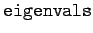
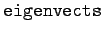
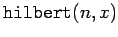
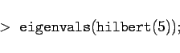

Inhalt Index DeskTop Bronstein

 Computeralgebrasysteme Anwendungen von Computeralgebrasystemen Elemente der linearen Algebra Maple
Computeralgebrasysteme Anwendungen von Computeralgebrasystemen Elemente der linearen Algebra Maple


Maple stellt mit  und  spezielle Operatoren für die Bestimmung von Eigenwerten und Eigenvektoren quadratischer Matrizen bereit. Dabei ist zu beachten, daß die Eigenwertgleichung bei Matrizen der Ordnung n > 4 im allgemeinen nicht mehr geschlossen lösbar ist. Daher liefert Maple in diesem Fall die Eigenwerte als genäherte Gleitpunktzahlen.
| Beispiel |
|
Es sind die Eigenwerte der 5-dimensionalen HILBERT-Matrix zu finden. Im Paket linalg ist eine spezielle Anweisung zur Erzeugung n-dimensionaler HILBERT-Matrizen vorhanden. Sie lautet . Ihre Matrixelemente sind 1/(i+j-x). Wird x nicht angegeben, so setzt Maple automatisch x=1. Die Aufgabe wird daher mit der Eingabe 
Mit |